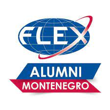
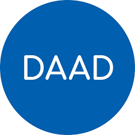
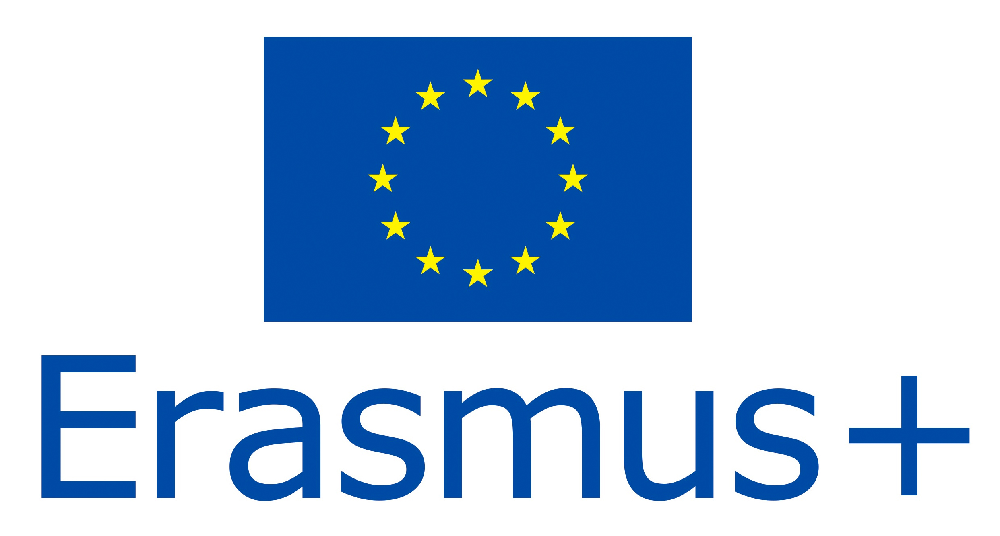

|  | 1993-1994 je bila prva programska godina programa razmene budućih lidera (FLEX). FLEX je nastao iz uverenja bivšeg senatora Bila Bredlija da je najbolji način da se obezbedi dugotrajan mir i međusobno razumevanje između SAD i zemalja Evroazije omogućiti mladim ljudima da iz prve ruke saznaju o SAD i Amerikancima i da nauče Amerikance o njihovim zemljama.FLEX je visoko konkurentan program stipendiranja zasnovan na zaslugama koji finansira State department SAD, a koji radi u Jermeniji, Azerbejdžanu, Češkoj Republici, Estoniji, Gruziji, Grčkoj, Mađarskoj, Kazahstanu, Kirgistanu, Letoniji, Litvaniji, Moldaviji, Mongoliji, Crnoj Gori , Poljskoj, Rumuniji, Srbiji, Slovačkoj, Tadžikistanu, Turkmenistanu, Ukrajini i Uzbekistanu. Preko 35.000 studenata godišnje se takmiči u više krugova testiranja kako bi zaradili FLEX stipendiju, koja im omogućava da provedu akademsku godinu u Sjedinjenim Državama živeći sa dobrovoljnom porodicom domaćinom i pohađajući srednju školu u SAD.Dok su u SAD, studenti FLEKS-a stiču liderske veštine, uče o američkom društvu i vrednostima i uče Amerikance o njihovim matičnim zemljama i kulturama. Studenti FLEX-a obavljaju društveni rad u svojim zajednicama u SAD i deluju kao ambasadori svojih zemalja. Mnogi su inspirisani ovim duhom volonterizma da razviju i implementiraju inovativne projekte u svojim matičnim zemljama, koristeći veštine i ideje koje su stekli tokom programa. FLEX studenti su prirodno radoznali i entuzijastični građani sveta. |
|  | Nemačka služba za akademsku razmenu, ili DAAD, osnovana je 1925. godine i najveća je nemačka organizacija za podršku u oblasti međunarodne akademske saradnje. DAAD grantovi za stipendije koje DAAD administrira u inostranstvu dostupni su studentima svih akademskih disciplina i na svakom nivou akademskog stepena, uključujući dodiplomske, diplomirane dodiplomske i nedavno diplomirane studente, studente master studija, doktorande, doktorande i postdoktorate.Svetska mreža DAAD-a takođe uključuje oko 50 informacionih centara i oko 450 DAAD mesta predavača. DAAD stipendija je jedna od najboljih stipendija koje nudi evropska zemlja Nemačka za izvanredne međunarodne studente. Svake godine studenti se biraju na osnovu zasluga i nudi im se DAAD stipendija za postdiplomske i doktorske studije na nemačkim univerzitetima. |
|  | Erasmus + obezbjeđuje grantove za širok okvir akcija i aktivnosti u oblasti obrazovanja, obuke, mladih i sporta. Program daje mogućnosti za studente, učesnike obuka, zaposlene i volontere da provedu besplatno jedan vremenski period u inostranstvu kako bi poboljšali svoje vještine i mogućnosti za zapošljavanje. Program daje podršku organizacijama da rade na transnacionalnim partnerstvima i razmjenjuju inovativne prakse u oblasti obrazovanja, obuke i mladih.U najširem smislu, program Erasmus+ u oblasti obrazovanja ima sljedeće prioritete: unaprijediti i podržati razvoj svih nivoa obrazovanja, ojačati veze između formalnog, neformalnog i informalnog učenja, osnažiti vezu obrazovanja sa svijetom rada, stvoriti dodatne vrijednosti za evropski prostor obrazovanja, povezati zemlje članice u definisanju obrazovnih politika. |